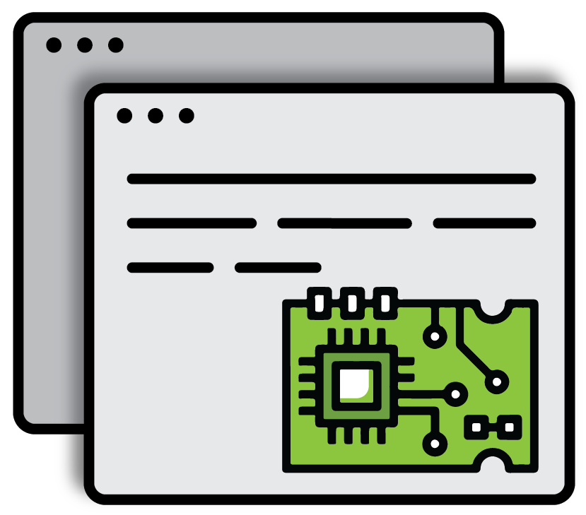

Système d'exploitation
- Linux : Création d'un système Linux embarqué avec BuildRoot et Yocto
- Drivers : Traite des techniques nécessaires à l'écriture de drivers Linux
- QT : Création d'interfaces graphiques sur Linux
voir plus

Programmation
- Langages : Langages - Programmation adaptée à l'embarqué et le temps réel
- Temps réel : Programmation et conception temps réel-multicore
- RTOS : Comprendre l'architecture, les services et applications de FreeRtos
voir plus

Logique programmable
- FPGAs & ASICs : Programmation VHDL
- Processors : Description des concepts de base des microprocesseurs
- SystemC : Conception et Simulation en SystemC
voir plus

Architecture processeur
- ARM Cores : Etude des différentes architectures et implémentations des Cortex A, R et M
- ST MCUs : Familles STM32 à coeur Cortex M
- NXP CPUs : Familles QorIQ - LayerScape
- NXP MCU : Familles Kinetis, LPC & i.MX
voir plus

Safety and security
- Embedded Security : Securité spécialisée pour les systèmes embarqués
- Embedded Security for STM32 : Familles STM32 à coeur Cortex M
- Embedded Security for NXP i.MX : Security of embedded systems and NXP
voir plus